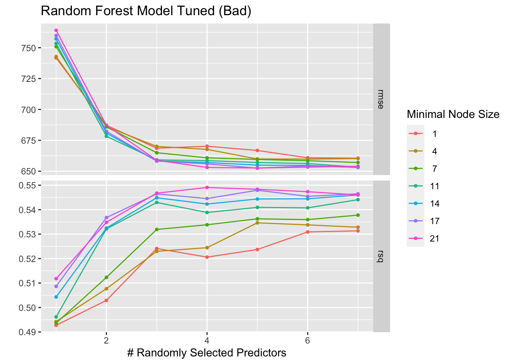
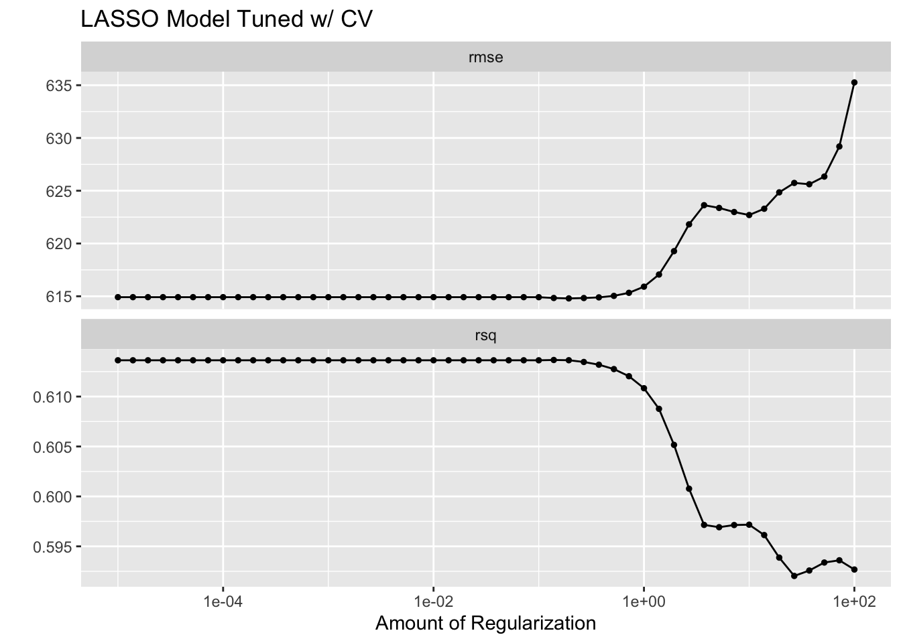

# Load required libraries
library(here)
library(readr)
library(tidymodels)
library(ggplot2)
library(GGally)
library(dplyr)
library(ranger)
library(glmnet)
library(yardstick)
library(patchwork)
library(knitr)
library(kableExtra)ML-Models Exercise
Exercise 10
Preliminaries
First, the required libraries were loaded.
Load in cleaned data from previous exercise and set value for rngseed.
# Load in cleaned data
data <- readRDS(here("ml-models-exercise", "cleandata.rds"))
# Set value for rndseed
rngseed <- 1234
Processing the RACE variable so that values of “7” or “88” are now represented by the number “3”.
# Replace 7 and 88 with 3 for RACE variable
levels(data$RACE)[levels(data$RACE) == "7" | levels(data$RACE) == "88"] <- "3"
Doing pairwise correlations.
# Select only continuous variables
data_continuous <- data[, c("DOSE", "AGE", "WT", "HT")]
# Create a pairwise correlation plot
pairwise_plot <- ggpairs(data_continuous[, c("DOSE", "AGE", "WT", "HT")],
upper = list(continuous = wrap("cor", size = 4)),
lower = list(continuous = wrap("points", size = 1, alpha = 0.5, colour = "#5c88da")),
diag = list(continuous = wrap("barDiag", fill = "#ffcd00"))
) +
theme_light() +
ggtitle("Pairwise Correlation Plot") +
theme(plot.title = element_text(hjust = 0.5),
text = element_text(size = 12),
axis.text.x = element_text(angle = 45, hjust = 1))
print(pairwise_plot)
Feature Engineering
Creating a dataframe for data with BMI, then calculating BMI based on WT and HT. Here WT is assumed to be measured in kilograms and HT is assumed to be measured in meters.
# Creating dataframe data_wBMI
data_wBMI <- data
# Calculating BMI based on WT (kg) and HT (m) variables
data_wBMI$BMI <- data$WT / (data$HT^2)
Model Building
We are using three models in this exercise, a linear model, a LASSO regression model, and a random forest model.
Defining the models.
# Linear model with all predictors
linear_model <- linear_reg() %>%
set_engine("lm") %>%
set_mode("regression")
# LASSO regression model
lasso_model <- linear_reg(penalty = 0.1, mixture = 1) %>%
set_engine("glmnet") %>%
set_mode("regression")
# Random forest model
random_forest_model <- rand_forest() %>%
set_engine("ranger", seed = rngseed) %>%
set_mode("regression")
Creating workflows for the models.
# Creating workflows
# Define recipes
recipe <- recipe(Y ~ ., data = data_wBMI)
recipe_lasso <- recipe(Y ~ ., data = data_wBMI) %>%
step_dummy(all_nominal(), -all_outcomes())
# Linear model workflow
linear_workflow <- workflow() %>%
add_recipe(recipe) %>%
add_model(linear_model)
# LASSO model workflow
lasso_workflow <- workflow() %>%
add_recipe(recipe_lasso) %>%
add_model(lasso_model)
# Random forest model workflow
rf_workflow <- workflow() %>%
add_recipe(recipe) %>%
add_model(random_forest_model)
Fitting the models.
# Fitting the models
# Fit the linear model
linear_fit <- fit(linear_workflow, data = data_wBMI)
# Fit the LASSO model
lasso_fit <- fit(lasso_workflow, data = data_wBMI)
# Fit the random forest model
rf_fit <- fit(rf_workflow, data = data_wBMI)
Making predictions for the models.
linear_preds <- predict(linear_fit, new_data = data_wBMI) %>%
bind_cols(data_wBMI) %>%
rename(predicted = .pred)
# Predictions for the LASSO model
lasso_preds <- predict(lasso_fit, new_data = data_wBMI) %>%
bind_cols(data_wBMI) %>%
rename(predicted = .pred)
# Predictions for the random forest model
rf_preds <- predict(rf_fit, new_data = data_wBMI) %>%
bind_cols(data_wBMI) %>%
rename(predicted = .pred)
Calculating the RMSE for each model.
# Calculating RMSE for each model
linear_rmse <- rmse(linear_preds, truth = Y, estimate = predicted) # Linear Model
lasso_rmse <- rmse(lasso_preds, truth = Y, estimate = predicted) # LASSO Model
rf_rmse <- rmse(rf_preds, truth = Y, estimate = predicted) # Random Forest Model
Visualizing model fit by plotting predicted vs observed values for each model.
# Plotting first fit
# Define colors and shapes for the legend
colors <- c("Predicted" = "#5c88da", "Observed" = "#ffcd00", "Reference Line" = "gray")
# Linear Model
p_linear <- ggplot(data_wBMI, aes(x = Y)) +
geom_point(aes(y = linear_preds$predicted, color = "Predicted"), show.legend = FALSE) +
geom_point(aes(y = Y, color = "Observed"), show.legend = FALSE) +
geom_abline(intercept = 0, slope = 1, linetype = "dashed", color = colors["Reference Line"]) +
labs(title = "Linear Model", y = "Predicted", x = "Observed") +
scale_color_manual(values = colors) +
theme_minimal() +
theme(aspect.ratio = 1) +
theme(axis.text.x = element_text(angle = 45, hjust = 1)) +
theme(axis.title.x = element_text(size = 8),
axis.title.y = element_text(size = 8)) +
theme(text = element_text(family = 'mono')) +
theme(title = element_text(size = 10))
# LASSO Model
p_lasso <- ggplot(data_wBMI, aes(x = Y)) +
geom_point(aes(y = lasso_preds$predicted, color = "Predicted")) +
geom_point(aes(y = Y, color = "Observed")) +
geom_abline(intercept = 0, slope = 1, linetype = "dashed", color = colors["Reference Line"]) +
labs(title = "LASSO Model", y = "Predicted", x = "Observed", color = "Legend") +
scale_color_manual(values = colors) +
theme_minimal() +
theme(aspect.ratio = 1) +
theme(legend.text = element_text(size = 6)) +
theme(legend.title = element_text(size = 6)) +
theme(axis.text.x = element_text(angle = 45, hjust = 1)) +
theme(axis.title.x = element_text(size = 8),
axis.title.y = element_text(size = 8)) +
theme(text = element_text(family = 'mono')) +
theme(title = element_text(size = 10))
# Random Forest Model
p_rf <- ggplot(data_wBMI, aes(x = Y)) +
geom_point(aes(y = rf_preds$predicted, color = "Predicted"), show.legend = FALSE) +
geom_point(aes(y = Y, color = "Observed"), show.legend = FALSE) +
geom_abline(intercept = 0, slope = 1, linetype = "dashed", color = colors["Reference Line"]) +
labs(title = "RF Model", y = "Predicted", x = "Observed") +
scale_color_manual(values = colors) +
theme_minimal() +
theme(aspect.ratio = 1)+
theme(axis.text.x = element_text(angle = 45, hjust = 1)) +
theme(axis.title.x = element_text(size = 8),
axis.title.y = element_text(size = 8)) +
theme(text = element_text(family = 'mono')) +
theme(title = element_text(size = 10))
# Combine plots
p_combined <- (p_rf+ p_linear + p_lasso) + plot_layout(ncol = 3)
p_combined <- p_combined +
plot_annotation(caption = 'First Fit - Predicted vs Observed Values') +
theme(plot.caption = element_text(size = 20), text = element_text(family = 'mono'))
print(p_combined)
Printing a table of RMSE values for each model.
# Create a data frame with your RMSE values
rmse_data <- data.frame(
Model = c("Linear Regression", "Lasso Regression", "Random Forest"),
RMSE = c(linear_rmse$.estimate, lasso_rmse$.estimate, rf_rmse$.estimate)
)
# Print the table using kable and kableExtra
kable(rmse_data, "html", align = "c", caption = "RMSE Values for Different Models") %>%
kable_styling(full_width = TRUE)| Model | RMSE |
|---|---|
| Linear Regression | 571.5954 |
| Lasso Regression | 571.6504 |
| Random Forest | 358.8240 |
The LASSO model and linear model perform similarly in this case. This could be due to the fact that in cases where there is little multicollinearity among predictors and the underlying model is not too complex, the LASSO model tends to perform in a similar way to the linear regression model.
Tuning the Models (BAD)
LASSO Model
Defining penalty grid values and adjusting the model for tuning.
# Define a grid of penalty values correctly
penalty_grid <- grid_regular(penalty(range = c(log10(1E-5), log10(1E2))), levels = 50)
# Adjust the LASSO model specification for tuning
lasso_model_tune <- linear_reg(penalty = tune(), mixture = 1) %>%
set_engine("glmnet") %>%
set_mode("regression")
Creating workflow and resampling using the apparent function.
# Create workflow
lasso_workflow_tune <- workflow() %>%
add_recipe(recipe_lasso) %>% # Make sure recipe_lasso is defined correctly
add_model(lasso_model_tune)
# Create an apparent resamples object for the apparent error rate
apparent_resamples <- apparent(data_wBMI)
Tuning the model and visualizing with autoplot.
# Tune the model
tuning_results <- tune_grid(
object = lasso_workflow_tune,
resamples = apparent_resamples,
grid = penalty_grid
)
# Visualize the tuning process
lassobadplot <- autoplot(tuning_results)
lassobadplot + ggtitle("LASSO Model Tuned (Bad)")
What is going on here?
LASSO does best (lowest RMSE) for low penalty values and gets worse as the penalty value increases. RMSE only increases and does not go lower than the value from the linear model. Why?
As the penalty parameter in LASSO increases, the model simplifies by reducing the number of features. It does this to prevent overfitting, but in some cases it can lead to underfitting. The lowest RMSE that LASSO can achieve will not be lower than the linear regression model because the penalty introduces bias which reduces variance.
Random Forest Model
Defining model with tunable parameters and creating a tuning grid.
# Define the random forest model with tunable parameters
random_forest_model_tune <- rand_forest(trees = 300, mtry = tune(), min_n = tune()) %>%
set_engine("ranger", seed = rngseed) %>%
set_mode("regression")
# Create a tuning grid
tuning_grid <- grid_regular(
mtry(range = c(1, 7)),
min_n(range = c(1, 21)),
levels = 7
)
Creating a workflow and tuning the random forest model, then visualizing with autoplot.
# Create workflow
rf_workflow <- workflow() %>%
add_recipe(recipe) %>%
add_model(random_forest_model_tune)
# Tune random forest model
tune_res <- tune_grid(
rf_workflow,
resamples = vfold_cv(data_wBMI, v = 5), # Adjust the number of folds if necessary
grid = tuning_grid
)
# Visualizing with autoplot
rfbadplot <- autoplot(tune_res)
rfbadplot + ggtitle("Random Forest Model Tuned (Bad)")
Tuning the Models Using CV
LASSO Model
Defining penalty grid values and adjusting the model for tuning.
# Define a grid of penalty values correctly
penalty_grid <- grid_regular(penalty(range = c(log10(1E-5), log10(1E2))), levels = 50)
# Adjust the LASSO model specification for tuning
lasso_model_tune_cv <- linear_reg(penalty = tune(), mixture = 1) %>%
set_engine("glmnet") %>%
set_mode("regression")
Adjusting the workflow and creating 5-fold cross-validation resamples.
# Adjust the workflow for the tunable model
lasso_workflow_tune_cv <- workflow() %>%
add_recipe(recipe_lasso) %>% # Make sure recipe_lasso is defined correctly
add_model(lasso_model_tune_cv)
# Create the cross-validation resamples
cv_resamples <- vfold_cv(data_wBMI, v = 5, repeats = 5)
Tuning the LASSO model using cross-validation and then visualizing with autoplot.
# Tune LASSO model using cross-validation
tuning_results_lasso_cv <- tune_grid(
object = lasso_workflow_tune_cv,
resamples = cv_resamples,
grid = penalty_grid
)
# Plot the tuning results
lassocvplot <- autoplot(tuning_results_lasso_cv)
lassocvplot + ggtitle("LASSO Model Tuned w/ CV")
Random Forest Model
Defining model with tunable parameters and creating a tuning grid.
# Define the random forest model with tunable parameters
random_forest_model_tune_cv <- rand_forest(trees = 300, mtry = tune(), min_n = tune()) %>%
set_engine("ranger", seed = rngseed) %>%
set_mode("regression")
# Create a tuning grid
tuning_grid <- grid_regular(
mtry(range = c(1, 7)),
min_n(range = c(1, 21)),
levels = 7
)
Creating a workflow and tuning the random forest model using cross-validation, then visualizing with autoplot.
# Create workflow
rf_workflow_cv <- workflow() %>%
add_recipe(recipe) %>%
add_model(random_forest_model_tune_cv)
# Tune the random forest model
tune_res_cv <- tune_grid(
rf_workflow_cv,
resamples = cv_resamples,
grid = tuning_grid
)
# Plot the tuning results
rfcvplot <- autoplot(tune_res_cv)
rfcvplot + ggtitle("Random Forest Model Tuned w/ CV")
What’s the difference?
LASSO Models
The LASSO models both follow a similar trend, the lower values are better and both perform worse with too much regularization. However, the “Bad” version seemed to initally be a better fit until the end where it began to overfit and then severely underperform.
Random Forest Models
The RF models also both follow a similar trend, as the number of randomly selected predictors increases, the RMSE decreases and stabalizes and the R-square value increases with the number of predictors. However, the “Bad” version has overall higher RMSE values and lower R-square values, which could indicate more overfitting.
Which model performed better?
LASSO performs the best. Based on the autoplot graph, the LASSO model has a lower RMSE compared to the RF model’s best RMSE values. Similarly the LASSO model has smaller R-squared values than the RF model.